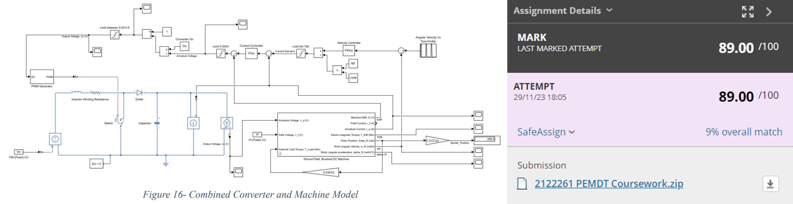

University of Bristol
Actuator Characterisation

Using FEMM, I modelled the magnetic fields inside a short-stroke linear actuator to predict its force production.
Switched Mode Power Supply

I built a 32V AC to 12V DC switch mode power supply including the design and simulation to size various components.
Embedded Loop DC Motor Controller
Simulink was used to design and model an embedded loop controller for a permanent magnet DC motor. My work achieved a high first with a score of 89%.